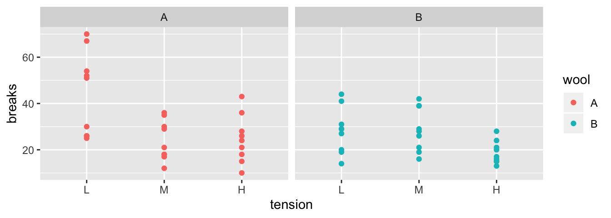

Chapter 4 Data Wrangling
Many of the tools to manipulate data frames in R were written without a consistent syntax and are difficult use together. To remedy this, Hadley Wickham (the writer of ggplot2) introduced a package called plyr which was quite useful. As with many projects, his first version was good but not great and he introduced an improved version that works exclusively with data.frames called dplyr which we will investigate. The package dplyr strives to provide a convenient and consistent set of functions to handle the most common data frame manipulations and a mechanism for chaining these operations together to perform complex tasks.
The Dr Wickham has put together a very nice introduction to the package that explains in more detail how the various pieces work and I encourage you to read it at some point. [http://cran.rstudio.com/web/packages/dplyr/vignettes/introduction.html].
One of the aspects about the data.frame object is that R does some simplification for you, but it does not do it in a consistent manner. Somewhat obnoxiously character strings are always converted to factors and subsetting might return a data.frame or a vector or a scalar. This is fine at the command line, but can be problematic when programming. Furthermore, many operations are pretty slow using data.frame. To get around this, Dr Wickham introduced a modified version of the data.frame called a tibble. A tibble is a data.frame but with a few extra bits. For now we can ignore the differences.
The pipe command %>% allows for very readable code. The idea is that the %>% operator works by translating the command a %>% f(b) to the expression f(a,b). This operator works on any function and was introduced in the magrittr package. The beauty of this comes when you have a suite of functions that takes input arguments of the same type as their output.
For example, if we wanted to start with x, and first apply function f(), then g(), and then h(), the usual R command would be h(g(f(x))) which is hard to read because you have to start reading at the innermost set of parentheses. Using the pipe command %>%, this sequence of operations becomes x %>% f() %>% g() %>% h().
| Written | Meaning |
|---|---|
a %>% f(b) |
f(a,b) |
b %>% f(a, .) |
f(a, b) |
x %>% f() %>% g() |
g( f(x) ) |
In dplyr, all the functions below take a data set as its first argument and outputs an appropriately modified data set. This will allow me to chain together commands in a readable fashion. The pipe command works with any function, not just the dplyr functions and I often find myself using it all over the place.
4.1 Verbs
The foundational operations to perform on a data set are:
add_row- Add an additional row of data.Subsetting - Returns a with only particular columns or rows
–
select- Selecting a subset of columns by name or column number.–
filter- Selecting a subset of rows from a data frame based on logical expressions.–
slice- Selecting a subset of rows by row number.arrange- Re-ordering the rows of a data frame.mutate- Add a new column that is some function of other columns.summarise- calculate some summary statistic of a column of data. This collapses a set of rows into a single row.
Each of these operations is a function in the package dplyr. These functions all have a similar calling syntax, the first argument is a data set, subsequent arguments describe what to do with the input data frame and you can refer to the columns without using the df$column notation. All of these functions will return a data set.
To demonstrate all of these actions, we will consider a tiny dataset of a gradebook of doctors at a Sacred Heart Hospital.
# Create a tiny data frame that is easy to see what is happening
grades <- tribble(
~l.name, ~Gender, ~Exam1, ~Exam2, ~Final,
'Cox', 'M', 93, 98, 96,
'Dorian', 'M', 89, 70, 85,
'Kelso', 'M', 80, 82, 81,
'Turk', 'M', 70, 85, 92)
grades## # A tibble: 4 x 5
## l.name Gender Exam1 Exam2 Final
## <chr> <chr> <dbl> <dbl> <dbl>
## 1 Cox M 93 98 96
## 2 Dorian M 89 70 85
## 3 Kelso M 80 82 81
## 4 Turk M 70 85 924.1.1 add_row
Suppose that we want to add a row to our dataset. We can give it as much or as little information as we want and any missing information will be denoted as missing using a NA which stands for Not Available.
## # A tibble: 5 x 5
## l.name Gender Exam1 Exam2 Final
## <chr> <chr> <dbl> <dbl> <dbl>
## 1 Cox M 93 98 96
## 2 Dorian M 89 70 85
## 3 Kelso M 80 82 81
## 4 Turk M 70 85 92
## 5 Reid <NA> 95 92 NABecause we didn’t assign the result of our previous calculation to any object name, R just printed the result. Instead, lets add all of Dr Reid’s information and save the result by overwritting the grades data.frame with the new version.
## # A tibble: 5 x 5
## l.name Gender Exam1 Exam2 Final
## <chr> <chr> <dbl> <dbl> <dbl>
## 1 Cox M 93 98 96
## 2 Dorian M 89 70 85
## 3 Kelso M 80 82 81
## 4 Turk M 70 85 92
## 5 Reid F 95 92 1004.1.2 Subsetting
These function allows you select certain columns and rows of a data frame.
4.1.2.1 select()
Often you only want to work with a small number of columns of a data frame and want to be able to select a subset of columns or perhaps remove a subset. The function to do that is dplyr::select()
I could select the columns Exam columns by hand, or by using an extension of the : operator
# select( grades, Exam1, Exam2 ) # from `grades`, select columns Exam1, Exam2
grades %>% select( Exam1, Exam2 ) # Exam1 and Exam2## # A tibble: 5 x 2
## Exam1 Exam2
## <dbl> <dbl>
## 1 93 98
## 2 89 70
## 3 80 82
## 4 70 85
## 5 95 92## # A tibble: 5 x 3
## Exam1 Exam2 Final
## <dbl> <dbl> <dbl>
## 1 93 98 96
## 2 89 70 85
## 3 80 82 81
## 4 70 85 92
## 5 95 92 100## # A tibble: 5 x 4
## l.name Gender Exam2 Final
## <chr> <chr> <dbl> <dbl>
## 1 Cox M 98 96
## 2 Dorian M 70 85
## 3 Kelso M 82 81
## 4 Turk M 85 92
## 5 Reid F 92 100## # A tibble: 5 x 2
## l.name Gender
## <chr> <chr>
## 1 Cox M
## 2 Dorian M
## 3 Kelso M
## 4 Turk M
## 5 Reid FThe select() command has a few other tricks. There are functional calls that describe the columns you wish to select that take advantage of pattern matching. I generally can get by with starts_with(), ends_with(), and contains(), but there is a final operator matches() that takes a regular expression.
## # A tibble: 5 x 2
## Exam1 Exam2
## <dbl> <dbl>
## 1 93 98
## 2 89 70
## 3 80 82
## 4 70 85
## 5 95 92## # A tibble: 5 x 3
## Exam1 Exam2 Final
## <dbl> <dbl> <dbl>
## 1 93 98 96
## 2 89 70 85
## 3 80 82 81
## 4 70 85 92
## 5 95 92 100The dplyr::select function is quite handy, but there are several other packages out there that have a select function and we can get into trouble with loading other packages with the same function names. If I encounter the select function behaving in a weird manner or complaining about an input argument, my first remedy is to be explicit about it is the dplyr::select() function by appending the package name at the start.
4.1.2.2 filter()
It is common to want to select particular rows where we have some logical expression to pick the rows.
## # A tibble: 3 x 5
## l.name Gender Exam1 Exam2 Final
## <chr> <chr> <dbl> <dbl> <dbl>
## 1 Cox M 93 98 96
## 2 Turk M 70 85 92
## 3 Reid F 95 92 100You can have multiple logical expressions to select rows and they will be logically combined so that only rows that satisfy all of the conditions are selected. The logicals are joined together using & (and) operator or the | (or) operator and you may explicitly use other logicals. For example a factor column type might be used to select rows where type is either one or two via the following: type==1 | type==2.
# select students with Final grades above 90 and
# average score also above 90
grades %>% filter(Exam2 > 90, Final > 90)## # A tibble: 2 x 5
## l.name Gender Exam1 Exam2 Final
## <chr> <chr> <dbl> <dbl> <dbl>
## 1 Cox M 93 98 96
## 2 Reid F 95 92 100## # A tibble: 2 x 5
## l.name Gender Exam1 Exam2 Final
## <chr> <chr> <dbl> <dbl> <dbl>
## 1 Cox M 93 98 96
## 2 Reid F 95 92 1004.1.2.3 slice()
When you want to filter rows based on row number, this is called slicing.
## # A tibble: 2 x 5
## l.name Gender Exam1 Exam2 Final
## <chr> <chr> <dbl> <dbl> <dbl>
## 1 Cox M 93 98 96
## 2 Dorian M 89 70 854.1.3 arrange()
We often need to re-order the rows of a data frame. For example, we might wish to take our grade book and sort the rows by the average score, or perhaps alphabetically. The arrange() function does exactly that. The first argument is the data frame to re-order, and the subsequent arguments are the columns to sort on. The order of the sorting column determines the precedent… the first sorting column is first used and the second sorting column is only used to break ties.
## # A tibble: 5 x 5
## l.name Gender Exam1 Exam2 Final
## <chr> <chr> <dbl> <dbl> <dbl>
## 1 Cox M 93 98 96
## 2 Dorian M 89 70 85
## 3 Kelso M 80 82 81
## 4 Reid F 95 92 100
## 5 Turk M 70 85 92The default sorting is in ascending order, so to sort the grades with the highest scoring person in the first row, we must tell arrange to do it in descending order using desc(column.name).
## # A tibble: 5 x 5
## l.name Gender Exam1 Exam2 Final
## <chr> <chr> <dbl> <dbl> <dbl>
## 1 Reid F 95 92 100
## 2 Cox M 93 98 96
## 3 Turk M 70 85 92
## 4 Dorian M 89 70 85
## 5 Kelso M 80 82 81In a more complicated example, consider the following data and we want to order it first by Treatment Level and secondarily by the y-value. I want the Treatment level in the default ascending order (Low, Medium, High), but the y variable in descending order.
# make some data
dd <- data.frame(
Trt = factor(c("High", "Med", "High", "Low"),
levels = c("Low", "Med", "High")),
y = c(8, 3, 9, 9),
z = c(1, 1, 1, 2))
dd## Trt y z
## 1 High 8 1
## 2 Med 3 1
## 3 High 9 1
## 4 Low 9 2# arrange the rows first by treatment, and then by y (y in descending order)
dd %>% arrange(Trt, desc(y))## Trt y z
## 1 Low 9 2
## 2 Med 3 1
## 3 High 9 1
## 4 High 8 14.1.4 mutate()
The mutate command either creates a new column in the data frame or updates an already existing column.
I often need to create a new column that is some function of the old columns. In the dplyr package, this is a mutate command. To do ths, we give a mutate( NewColumn = Function of Old Columns ) command. You can do multiple calculations within the same mutate() command, and you can even refer to columns that were created in the same mutate() command.
grades <- grades %>% mutate(
average = (Exam1 + Exam2 + Final)/3,
grade = cut(average, c(0, 60, 70, 80, 90, 100), # cut takes numeric variable
c( 'F','D','C','B','A')) ) # and makes a factor
grades## # A tibble: 5 x 7
## l.name Gender Exam1 Exam2 Final average grade
## <chr> <chr> <dbl> <dbl> <dbl> <dbl> <fct>
## 1 Cox M 93 98 96 95.7 A
## 2 Dorian M 89 70 85 81.3 B
## 3 Kelso M 80 82 81 81 B
## 4 Turk M 70 85 92 82.3 B
## 5 Reid F 95 92 100 95.7 AIf we want to update some column information we will also use the mutate command, but we need some mechanism to selct the rows to change, while keeping all the other row values the same. The functions if_else() and case_when() are ideal for this task.
The if_else syntax is if_else( logical.expression, TrueValue, FalseValue ). We can use this to update a score in our gradebook.
# Update Doctor Reids Final Exam score to be a 98, leave everybody elses the same.
grades <- grades %>%
mutate( Final = if_else(l.name == 'Reid', 98, Final ) )
grades## # A tibble: 5 x 7
## l.name Gender Exam1 Exam2 Final average grade
## <chr> <chr> <dbl> <dbl> <dbl> <dbl> <fct>
## 1 Cox M 93 98 96 95.7 A
## 2 Dorian M 89 70 85 81.3 B
## 3 Kelso M 80 82 81 81 B
## 4 Turk M 70 85 92 82.3 B
## 5 Reid F 95 92 98 95.7 AWe could also use this to modify all the rows. For example, perhaps we want to change the gender column information to have levels Male and Female.
# Update the Gender column labels
grades <- grades %>%
mutate( Gender = if_else(Gender == 'M', 'Male', 'Female' ) )
grades## # A tibble: 5 x 7
## l.name Gender Exam1 Exam2 Final average grade
## <chr> <chr> <dbl> <dbl> <dbl> <dbl> <fct>
## 1 Cox Male 93 98 96 95.7 A
## 2 Dorian Male 89 70 85 81.3 B
## 3 Kelso Male 80 82 81 81 B
## 4 Turk Male 70 85 92 82.3 B
## 5 Reid Female 95 92 98 95.7 ATo do something similar for the case where we have 3 or more categories, we could use the ifelse() command repeatedly to address each category level seperately. However because the ifelse command is limited to just two cases, it would be nice if there was a generalization to multiple categories. The dplyr::case_when function is that generalization. The synax is case_when( logicalExpression1~Value1, logicalExpression2~Value2, ... ). We can have as many LogicalExpression ~ Value pairs as we want.
Consider the following data frame that has name, gender, and political party affiliation of six individuals. In this example, we’ved coded male/female as 1/0 and political party as 1,2,3 for democratic, republican, and independent.
people <- data.frame(
name = c('Barack','Michelle', 'George', 'Laura', 'Bernie', 'Deborah'),
gender = c(1,0,1,0,1,0),
party = c(1,1,2,2,3,3)
)
people## name gender party
## 1 Barack 1 1
## 2 Michelle 0 1
## 3 George 1 2
## 4 Laura 0 2
## 5 Bernie 1 3
## 6 Deborah 0 3people <- people %>%
mutate( gender = if_else( gender == 0, 'Female', 'Male') ) %>%
mutate( party = case_when( party == 1 ~ 'Democratic',
party == 2 ~ 'Republican',
party == 3 ~ 'Independent',
TRUE ~ 'None Stated' ) )
people## name gender party
## 1 Barack Male Democratic
## 2 Michelle Female Democratic
## 3 George Male Republican
## 4 Laura Female Republican
## 5 Bernie Male Independent
## 6 Deborah Female IndependentOften the last case is a catch all case where the logical expression will ALWAYS evaluate to TRUE and this is the value for all other input.
As another alternative to the problem of recoding factor levels, we could use the command forcats::fct_recode() function. See the Factors chapter in this book for more information about factors.
4.1.5 summarise()
By itself, this function is quite boring, but will become useful later on. Its purpose is to calculate summary statistics using any or all of the data columns. Notice that we get to chose the name of the new column. The way to think about this is that we are collapsing information stored in multiple rows into a single row of values.
## # A tibble: 1 x 1
## mean.E1
## <dbl>
## 1 85.4We could calculate multiple summary statistics if we like.
# calculate the mean and standard deviation
grades %>% summarise( mean.E1=mean(Exam1), stddev.E1=sd(Exam1) )## # A tibble: 1 x 2
## mean.E1 stddev.E1
## <dbl> <dbl>
## 1 85.4 10.44.2 Split, apply, combine
Aside from unifying the syntax behind the common operations, the major strength of the dplyr package is the ability to split a data frame into a bunch of sub-data frames, apply a sequence of one or more of the operations we just described, and then combine results back together. We’ll consider data from an experiment from spinning wool into yarn. This experiment considered two different types of wool (A or B) and three different levels of tension on the thread. The response variable is the number of breaks in the resulting yarn. For each of the 6 wool:tension combinations, there are 9 replicated observations per wool:tension level.
## 'data.frame': 54 obs. of 3 variables:
## $ breaks : num 26 30 54 25 70 52 51 26 67 18 ...
## $ wool : Factor w/ 2 levels "A","B": 1 1 1 1 1 1 1 1 1 1 ...
## $ tension: Factor w/ 3 levels "L","M","H": 1 1 1 1 1 1 1 1 1 2 ...
The first we must do is to create a data frame with additional information about how to break the data into sub-data frames. In this case, I want to break the data up into the 6 wool-by-tension combinations. Initially we will just figure out how many rows are in each wool-by-tension combination.
# group_by: what variable(s) shall we group on.
# n() is a function that returns how many rows are in the
# currently selected sub-dataframe
warpbreaks %>%
group_by( wool, tension) %>% # grouping
summarise(n = n() ) # how many in each group## # A tibble: 6 x 3
## # Groups: wool [2]
## wool tension n
## <fct> <fct> <int>
## 1 A L 9
## 2 A M 9
## 3 A H 9
## 4 B L 9
## 5 B M 9
## 6 B H 9The group_by function takes a data.frame and returns the same data.frame, but with some extra information so that any subsequent function acts on each unique combination defined in the group_by. If you wish to remove this behavior, use group_by() to reset the grouping to have no grouping variable.
Using the same summarise function, we could calculate the group mean and standard deviation for each wool-by-tension group.
warpbreaks %>%
group_by(wool, tension) %>%
summarise( n = n(), # I added some formatting to show the
mean.breaks = mean(breaks), # reader I am calculating several
sd.breaks = sd(breaks)) # statistics.## # A tibble: 6 x 5
## # Groups: wool [2]
## wool tension n mean.breaks sd.breaks
## <fct> <fct> <int> <dbl> <dbl>
## 1 A L 9 44.6 18.1
## 2 A M 9 24 8.66
## 3 A H 9 24.6 10.3
## 4 B L 9 28.2 9.86
## 5 B M 9 28.8 9.43
## 6 B H 9 18.8 4.89If instead of summarizing each split, we might want to just do some calculation and the output should have the same number of rows as the input data frame. In this case I’ll tell dplyr that we are mutating the data frame instead of summarizing it. For example, suppose that I want to calculate the residual value \[e_{ijk}=y_{ijk}-\bar{y}_{ij\cdot}\] where \(\bar{y}_{ij\cdot}\) is the mean of each wool:tension combination.
warpbreaks %>%
group_by(wool, tension) %>% # group by wool:tension
mutate(resid = breaks - mean(breaks)) %>% # mean(breaks) of the group!
head( ) # show the first couple of rows## # A tibble: 6 x 4
## # Groups: wool, tension [1]
## breaks wool tension resid
## <dbl> <fct> <fct> <dbl>
## 1 26 A L -18.6
## 2 30 A L -14.6
## 3 54 A L 9.44
## 4 25 A L -19.6
## 5 70 A L 25.4
## 6 52 A L 7.444.3 Exercises
- The dataset
ChickWeighttracks the weights of 48 baby chickens (chicks) feed four different diets. Feel free to complete all parts of the exercise in a single R pipeline at the end of the problem.Load the dataset using
- Look at the help files for the description of the columns.
- Remove all the observations except for observations from day 10 or day 20. The tough part in this instruction is disguishing between “and” and “or”. Obviously there are no observations that occur from both day 10 AND day 20. Google ‘R logical operators’ to get an introducton to those.
- Calculate the mean and standard deviation of the chick weights for each diet group on days 10 and 20.
- The OpenIntro textbook on statistics includes a data set on body dimensions.
Load the file using
- The column sex is coded as a 1 if the individual is male and 0 if female. This is a non-intuitive labeling system. Create a new column
sex.MFthat uses labels Male and Female. _Hint: the ifelse() command will be very convenient here. The ifelse() command in R functions similarly to the same command in Excel. Feel free to complete all parts of the exercise in a single R pipeline at the end of the problem.*_ - The columns
wgtandhgtmeasure weight and height in kilograms and centimeters (respectively). Use these to calculate the Body Mass Index (BMI) for each individual where \[BMI=\frac{Weight\,(kg)}{\left[Height\,(m)\right]^{2}}\] - Double check that your calculated BMI column is correct by examining the summary statistics of the column (e.g.
summary(Body)). BMI values should be between 18 to 40 or so. Did you make an error in your calculation?
The function
cuttakes a vector of continuous numerical data and creates a factor based on your give cut-points.# Define a continuous vector to convert to a factor x <- 1:10 # divide range of x into three groups of equal length cut(x, breaks=3)## [1] (0.991,4] (0.991,4] (0.991,4] (0.991,4] (4,7] (4,7] (4,7] ## [8] (7,10] (7,10] (7,10] ## Levels: (0.991,4] (4,7] (7,10]# divide x into four groups, where I specify all 5 break points cut(x, breaks = c(0, 2.5, 5.0, 7.5, 10))## [1] (0,2.5] (0,2.5] (2.5,5] (2.5,5] (2.5,5] (5,7.5] (5,7.5] ## [8] (7.5,10] (7.5,10] (7.5,10] ## Levels: (0,2.5] (2.5,5] (5,7.5] (7.5,10]# (0,2.5] (2.5,5] means 2.5 is included in first group # right=FALSE changes this to make 2.5 included in the second # divide x into 3 groups, but give them a nicer # set of group names cut(x, breaks=3, labels=c('Low','Medium','High'))## [1] Low Low Low Low Medium Medium Medium High High High ## Levels: Low Medium HighCreate a new column of in the data frame that divides the age into decades (10-19, 20-29, 30-39, etc). Notice the oldest person in the study is 67.
Find the average BMI for each
SexbyAge.Grpcombination.